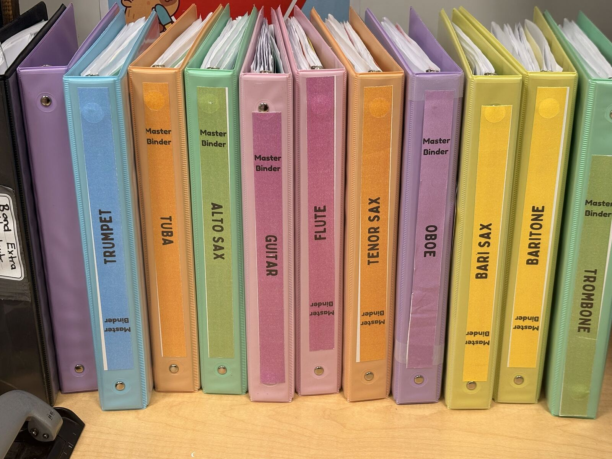

Before the First Downbeat
Build the entry routines, visual supports, storage systems and shared language that make clarity and independence possible.
Read the Article
Neurospicy Music Teacher Resources
Practical systems, rehearsal routines, and classroom structures that support neurodivergent teachers and learners—without losing sight of the music.
Articles

Build the entry routines, visual supports, storage systems and shared language that make clarity and independence possible.
Read the Article
Teach students how to diagnose a musical problem, choose a useful strategy, check the result and decide what to try next.
Read the Article